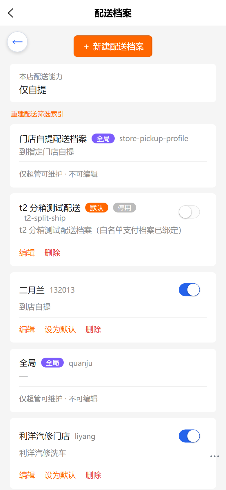
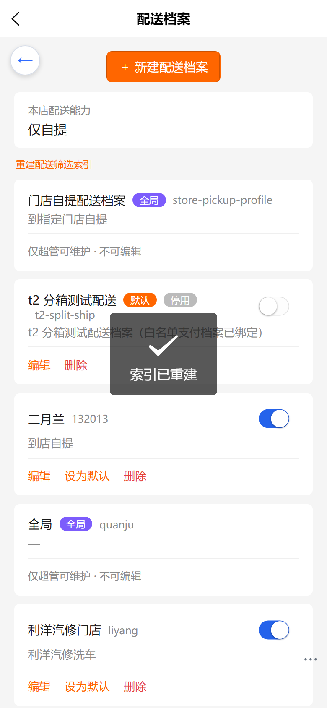
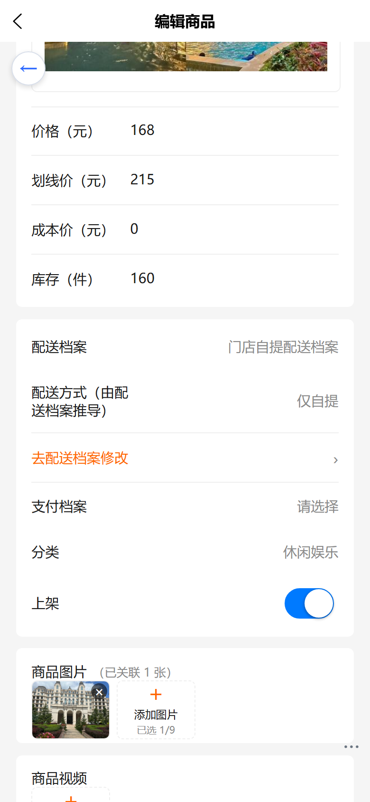
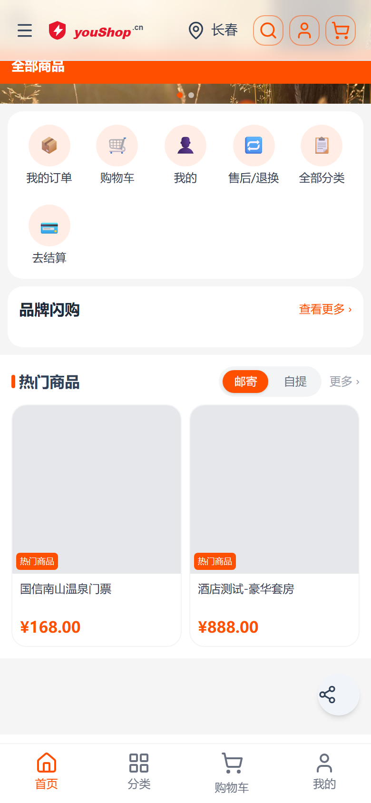
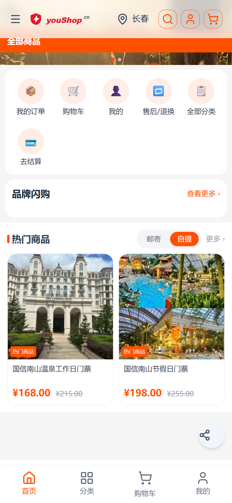

web-admin · 操作手册
商品的「邮寄 / 自提」能力不再手填，而是由配送档案自动派生；C 端筛选条随之收口为「仅渠道双能力才显示」，筛选改为服务端生效。
改动前有两套互相打架的来源：
结果就是：商品勾了「邮寄」，但它的变体绑的档案只支持自提——C 端却仍把商品当邮寄展示，下单时才被结算链路拦下。
商品能力一律以配送档案派生的结果为准：商品表单上的「配送方式」变为只读展示，值由系统推导，商户不再手填。
链路：变体 → 生效配送档案 → 档案绑定的配送方式（ShippingProfileMethod.mode）→ 能力。
| 配送方式的 mode | 推导出的 C 端能力 | 说明 |
|---|---|---|
mail | 邮寄 | 快递/中转等物流类方式（如 courier-delivery） |
pickup / store / employee | 自提 | 到店自提、自提点、员工代提，均归入自提 |
bothSupported = true。派生出的能力会写入内置 facet（mail / self-pickup），C 端筛选走 Vendure 原生搜索的
facetValueFilters（粒度 = ProductVariant）。索引在以下时机会自动重建：
索引只在「档案被写过」时才建立，历史渠道可能从未写过档案 → 索引为空。此时请到 配送档案页 → 重建配送筛选索引 手动补建（见下一节截图）。
路径：配送档案。页面顶部即「本店配送能力」摘要与「重建配送筛选索引」按钮。


商品编辑页的「配送方式」只读展示推导结果，并给出跳转入口；不再手工勾选。

该商品的变体绑定了「门店自提配送档案」（store-pickup），档案绑定的是到店自提方式 → 能力即自提。
想让商品支持邮寄，应改配送档案（增加快递方式）或给变体换绑支持邮寄的档案，而不是改商品表单。
| 渠道派生能力 | 首页/列表筛选条 | 展示结果 |
|---|---|---|
| 同时支持邮寄 + 自提 | 渲染「邮寄 / 自提」 | 按所选方式过滤 |
| 仅邮寄 或 仅自提 | 不渲染 | 锁定唯一方式，不做无意义选择 |
| 能力未知（查询失败） | 保守渲染 | 不倒退为「什么都不显示」 |
渲染条件同时受五级风格配置约束：需在装修/主题配置里开启该模块的城市·配送过滤（否则即使双能力也不显示）。
点击「自提 / 邮寄」后，首页商品块会带着 facetValueFilters 重新向服务端取数（而不是在已加载的数组里做本地过滤），
因此不会出现「第 1 页按邮寄、第 2 页混入自提」的问题；切换时商品集合会真实变化。
收口后，未绑定档案 / 未维护能力的商品不再「两种方式下都出现」。若某店首页默认「邮寄」仅剩少量商品， 说明库内仅有少量商品绑定了支持邮寄的档案——请到配送档案补建快递档案并给变体绑定，或把首页默认方式配成自提。
配送方式走服务端过滤，城市维度仍按本地规则过滤：商品 belongCity 与用户所选城市做精确匹配（自提判定）。
库里 belongCity 写「长春」而选择器给「长春市」时，精确匹配会判不中。请保持两者字面一致。
| 现象 | 原因 | 处理 |
|---|---|---|
| C 端筛选条整条消失 | 渠道派生能力为单一方式（没有启用中的快递档案） | 到配送档案页补建/启用快递档案；或确认为纯自提店（属正常） |
| 筛选条在，但切换后结果不变/为空 | 历史渠道的 facet 索引为空（索引只在档案写操作时建立） | 配送档案页 →「重建配送筛选索引」 |
| 商品表单里「配送方式」是灰的 | 已改为派生只读（设计如此） | 改档案，或给变体换绑档案 |
| 默认「邮寄」下首页只剩 1~2 件 | 按档案收口后，多数商品只绑了自提档案 | 给商品绑定支持邮寄的档案，或调整首页默认方式 |
| 自提商品在选择长春时看不到 | belongCity 与城市名字面不一致（如「长春」vs「长春市」） |
统一商品的城市字段与选择器命名 |


| 查询 | totalItems | 说明 |
|---|---|---|
| baseline（无 filter） | 10 | 该渠道可搜到的商品总数 |
facetValueFilters:[{or:["8"]}]（邮寄） | 2 | 与 C 端默认态一致 |
facetValueFilters:[{or:["9"]}]（自提） | 9 | 再经城市维度本地过滤后 C 端可见 2 件 |
筛选条按渠道双能力渲染、切换后服务端重新取数、商品集合随方式真实变化；后台只读展示与索引重建入口均可用。